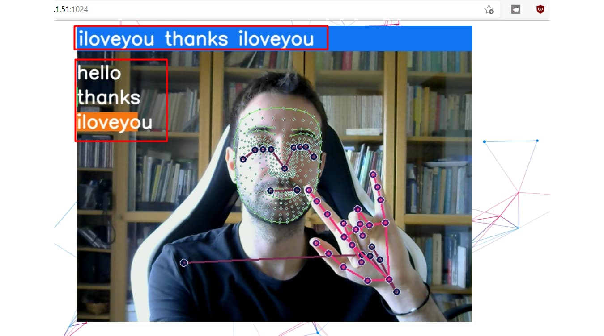
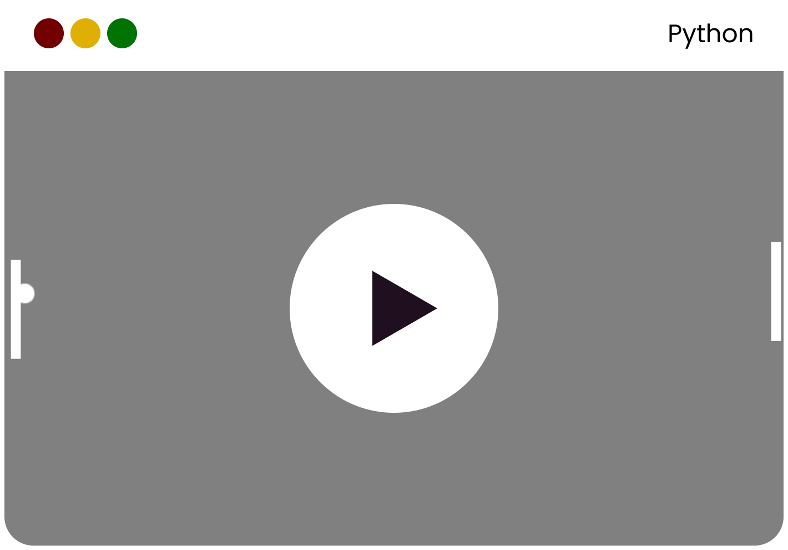

Uma linguagem versátil que brilha tanto na criação de jogos quanto na automação de tarefas, permitindo aos desenvolvedores construir experiências interativas e otimizar processos com eficiência.
Python é uma linguagem de programação poderosa e fácil de aprender. Ela é usada para desenvolver aplicações web, análise de dados, inteligência artificial e muito mais. Sua sintaxe clara e sua comunidade ativa tornam Python uma escolha popular entre programadores iniciantes e experientes.
A automação com IA refere-se ao uso da linguagem de programação Python para criar programas, scripts ou ferramentas que executam tarefas automaticamente, sem intervenção manual. Em vez de codificar regras rígidas, a automação com IA utiliza dados de treinamento para aprender padrões e tomar decisões.
OpenCV, originalmente, desenvolvida pela Intel, em 2000, é uma biblioteca multiplataforma, totalmente livre ao uso acadêmico e comercial, para o desenvolvimento de aplicativos na área de Visão computacional, bastando seguir o modelo de licença BSD Intel.
Use as setas do teclado para mover a raquete esquerda (jogador 1):
O objetivo é evitar que a bola passe pela sua raquete e tentar fazer a bola passar pela raquete do adversário (controlado pela IA).
